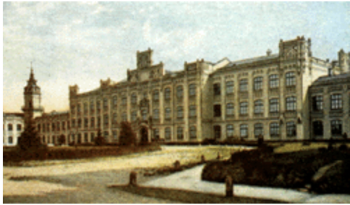

Загальна історія інституту
Ідея створення технічного навчального закладу виникла у цукрозаводчиків південно-західного краю. 18 лютого 1880 року при активній підтримці голови київського біржового комітету М.Хрякова було вирішено відкрити підписку для збору пожертвувань.
Накопичені гроші, гарантовані внески меценатів міста та підтримка зі сторони міністра юстиції С.Вітте дозволили 25 листопада 1896 року на приватній нараді в будинку Л.І. Бродського прийняти рішення про заснування в Києві Політехнічного інституту.
Під головуванням С.М. Сольського (київський міський голова) і за участі за участі представників міської влади, адміністрації Південо-західної залізниці, інженерів та промисловців було затверджено Протокол, “...що складає власне перший фактичний документ в історії вищого технічного учбового закладу в м. Києві”. У цьому документі зазначалось, що “... найбільш прийнятим типом нового навчального закладу визначити тип Політехнічного інституту, що складається з кількох відділів різних спеціальностей, за прикладом політехнікумів у Цюриху, Карлсруе, Мюнхені, Відні, Ганновері, Аахені, Дрездені, Ризі тощо”.
 Для розв'язання організаційних питань розпорядженням директора департаменту
мануфактур і
торгівлі Міністерства Фінансів створено спеціальний комітет, який очолив генерал-губернатор
Південно-Західного краю граф О.П. Ігнатьєв. На заснування інституту було зібрано добровільні пожертви
загальною сумою 1 000 374 крб. 53 коп. при вартості будівництва і обладнання інституту 2 650 000
карбованців. Серед організацій та людей, які внесли кошти, були: Київська міська Дума - 300 000 крб.,
Терещенко з синами - 150 000 крб., Л. Бродський - 100 000 крб.; Київський земельний банк - 15 000 крб.,
Товариство Красилівського цукрового заводу - 2 000 крб., загалом 139 товариств, банків, заводів, установ,
окремих громадян.
Для розв'язання організаційних питань розпорядженням директора департаменту
мануфактур і
торгівлі Міністерства Фінансів створено спеціальний комітет, який очолив генерал-губернатор
Південно-Західного краю граф О.П. Ігнатьєв. На заснування інституту було зібрано добровільні пожертви
загальною сумою 1 000 374 крб. 53 коп. при вартості будівництва і обладнання інституту 2 650 000
карбованців. Серед організацій та людей, які внесли кошти, були: Київська міська Дума - 300 000 крб.,
Терещенко з синами - 150 000 крб., Л. Бродський - 100 000 крб.; Київський земельний банк - 15 000 крб.,
Товариство Красилівського цукрового заводу - 2 000 крб., загалом 139 товариств, банків, заводів, установ,
окремих громадян.
У конкурсі на проекти споруд Політехнічного інституту взяли участь відомі архітектори: Бенуа, Гоген, Кітнер, Кобелєв, Померанцев, Цендер та Шретер. Кращим був визнаний проект проф. І.С. Кітнера, за яким і споруджено корпуси Київського політехнічного інституту. Оскільки він жив у Санкт-Петербурзі і не мав змоги безпосередньо керувати ходом робіт, роботи очолив архітектор О.В. Кобелєв. Для будівництва інституту міська влада виділила декілька ділянок. Після ретельного ознайомлення була вибрана ділянка вздовж Брест-Литовського шосе площею 38 десятин.
“Загальний об’єм усіх будівель Київського політехнічного інституту імператора Олександра II, не враховуючи низки дерев’яних будівель і будівель другого дослідного поля (станція для випробувань сільськогосподарських пристроїв і машин), складає досить значну суму - 26 560 куб. саж.
Ця кількість між окремими спорудами розподіляється таким чином: головний корпус - 14 114 куб. саж., хімічний павільйон - 5 557 куб. саж., механічна майстерня (2 будівлі) - 2 643 куб. саж., скотний двір - 296 куб. саж. і кам’яні службові будівлі - 27 куб. саж.”
31 серпня 1898 року відбулися урочистості з нагоди відкриття Київського політехнічного інституту, де директор Департаменту торгівлі та мануфактури оголосив Височайше повеління з цього приводу.
Було визначено чотири відділення: механічне (109 студентів), інженерне (101 студент), сільськогосподарське (87 студентів), хімічне (63 студенти). Ще в червні 1898 р. було оголошено перший прийом заяв до інституту. Відповідно до Статуту, до вступних іспитів допускалися всі бажаючі, які мали атестат про закінчення гімназії, реального училища або інших середніх навчальних закладів, що прирівнювалися до гімназії. Поза конкурсом зараховувалися абітурієнти, які вже закінчили інші вузи. На 330 місць було подано 1100 заяв. Конкурсні випробування з математики, фізики і російської мови успішно витримали значно більше абітурієнтів, ніж передбачалося студентських місць. За клопотанням ради інституту Міністерство фінансів дозволило прийняти 30 чоловік понад норму.
Заняття в інституті розпочалися 1 вересня 1898 р. у приміщенні, збудованому для комерційного училища (вул. Воровського, 24), яке на рік взяв в оренду інститут. Після завершення будівництва (квітень 1902 р.) інститут мав у розпорядженні повний комплекс будівель: головний корпус - інженерне, механічне та агрономічне відділення, канцелярія, фундаментальна науковотехнічна бібліотека; хімічний корпус - хімічне відділення; механічні майстерні з центральною електростанцією для освітлення всіх будівель і опалення головного корпусу; будівлі дослідного поля, двір для худоби, сільськогосподарьску ферма та сад; житло для професорів і лаборантів - 2 будівлі; студентська їдальня.
Першим директором КПІ був призначений В.Л. Кирпичов, як фахівець в області організації і створення вищих навчальних закладів. Науково-методичну допомогу під час організації та становлення інституту надали корифеї науки Д.І. Менделєєв, М.Є. Жуковський, К.А. Тимірязєв та інші. Педагогічний колектив КПІ вперше в країні започаткував конкурсний порядок призначення професорів кафедр виключно з осіб, які мають учений ступінь. Це був найдоцільніший метод комплектування кафедр висококваліфікованими фахівцями. Для роботи в інституті було запрошено багатьох відомих вчених Києва, Москви, Петербурга, Казані, Харкова. Серед них визначні фахівці у галузі теоретичної механіки О.П. Котельникові О.М. Динник,математики В.П. Єрмаков Б.Я. Букреєв, один з основоположників теорії різання металів К.О. Зворикін, геолог-мінералог О.В. Нечаєв, відомий вчений, металург В.П. Іжевський, теплотехнік О.О. Радціг, видатний фахівець мостобудування Є.О. Патон, обдаровані хіміки М.І. Коновалов і Л.В. Писаржевський, академік архітектури О.В. Кобелєв, художник М.К. Пимоненко Перший педагогічний колектив КПІ. Пізніше на викладацьку роботу в інститут були запрошені всесвітньовідомі вчені механіки С.П. Тимошенко К.К. СимінськийС.В. Серенсен та ін.
Термін навчання в інституті складав чотири роки (вісім семестрів). Система навчання курсова. Передбачалося, що скорочення часу навчання на один рік не зашкодить якості курсу, а досягатиметься шляхом підвищення інтенсивності викладання, скорочення канікул і екзаменаційного періоду. При цьому промисловість швидше матиме фахівців, а молоді люди на рік раніше вступатимуть у самостійне життя Організація навчання в КПІ: 1898-1917.
Першим головою Державної екзаменаційної комісії КПІ у 1903 році був Д.І. Менделєєв. Диплом отримало всього 93 випускника - навчатись було дуже важко, обов'язково необхідно було вносити оплату за навчання, розгортались революційні події. Першим випускникам КПІ разом із дипломами вручали нагрудний Знак випускника. Студенство КПІ у дореволюційні часи
Вже з 1899 року розпочався рух за створення п’ятого, повітроплавного відділення КПІ, що його очолив один із найбільших ентузіастів авіації професор Микола Артем’єв, талановитий учень Миколи Жуковського. З його ініціативи в 1905–1906 роках при механічному гуртку КПІ було організовано повітроплавну секцію. Першим почесним головою секції став професор Степан Тимошенко, а її віце-головою – студент механічного відділення Вікторин Бобров. У листопаді 1908 року секція реорганізувалася в повітроплавний гурток із відділами аеропланів, гелікоптерів, орнітоптерів і двигунів. Пристрасним пропагандистом ідей авіації та планеризму був професор КПІ Микола Делоне (син піонера авіації Бориса Делоне), який став одним із організаторів Київського повітроплавного товариства (КПТ). Саме КПТ було першим авіаційним осередком, у роботі якого брали участь професори, інженери, конструктори, а також студенти КПІ, котрі виступали з доповідями з питань авіації, будували і випробовували моделі літальних апаратів, планери.
Невід'ємною сторінкою історії КПІ є його участь у загальнодемократичному русі країни, що здійснювався під гаслом демократизації вищої школи, свободи студентських об'єднань. Уже навесні 1899 р., тобто у перший рік існування вузу, його вихованці взяли участь у всеросійському студентському страйку, спрямованому проти реакційної Політики властей. Уряд відповів на це виключенням з інституту, арештом і засланням 32 студентів — організаторів та активних учасників страйку. Проте студентські заворушення не припинялись...
Влітку 1918 року було створено п'ятий - електротехнічний факультет. Заняття в інституті припинялися і знову відновлювались зважаючи на перебіг військових дій в Києві. Соціальні трансформації в країні відображалися і в докорінній зміні принципів управління ВУЗом.
Для реконструкції народного господарства України після революцій і громадянської війни необхідно було створити і відновити ряд галузей промисловості: машинобудівну, верстатобудівну, автомобільну, хімічну, оборонну, тракторну, металургійну та ін., реконструювати старі і збудувати нові підприємства, технічно переозброїти їх. Для виконання цих народногосподарських планів треба було за короткий час виховати технічну інтелігенцію. Це важливе завдання покладалося на вузи країни. Внесок КПІ в індустріалізацію народного господарства СРСР]
У березні 1926 року відбувся перший Всесоюзний з'їзд делегатів організації воєнно-наукового товариства СРСР, у роботі якого приймав участь ректор Київського політехнічного інституту Бобров. На цьому з'їзді було поставлено завдання про воєнізацію навчальних закладів: в КПІ створюється воєнно-науковий гурток та організаційний комітет, головою якого став ректор Бобров.
У червневі дні 1941 р. Київський індустріальний інститут завершував 43-й навчальний рік. В інституті навчалися 3000 студентів, працювали понад 300 професорів-викладачів, загальна чисельність інститутського колективу складала 5000 чоловік. Як і в інших вузах, випускники захищали дипломні проекти і одержували призначення на роботу, старшокурсники мали виробничу практику в різних містах країни, студенти молодших курсів складали перевідні іспити. Війна об'єднала усіх в єдиній справі — захисті Батьківщини .
З перших днів війни багато викладачів і співробітників, випускників і студентів інституту добровільно і через мобілізацію поповнили Червону Армію. Вони брали участь в бойових діях на всіх фронтах. Вихованці інституту, які залишилися на окупованих територіях, брали участь у підпільній і партизанській боротьбі. Фронтовики викладачі, співробітники, випускники і студенти КПІ.
Наприкінці червня 1941 р. інститут одержав розпорядження про підготовку до евакуації в Ташкент, де він функціонував у складі Середньоазіатського індустріального інституту .
Визволення Києва у листопаді 1943 р. дало можливість відновити роботу інституту: почалася реєстрація викладачів, співробітників, студентів, які поверталися до інституту. Вже у другій половині січня 1944 р. почала працювати приймальна комісія для набору студентів на перший курс і поновлення студентів старших курсів. Усі зусилля колективу інституту було спрямовано на відновлення навчально-матеріальної бази, адже унаслідок фашистської окупації та жорстоких боїв за Київ було зруйновано більше половини загальної площі навчальних приміщень, згоріли гуртожитки, пограбовано майно. Завдяки включенню інституту списку найважливіших промислових і транспортних вузів країни, студенти всіх курсів звільнялися від призову до Радянської Армії, їм надавалась підвищена стипендія (передусім це стосувалось студентів, які оволодівали спеціальностями з ливарного, ковальського, пресового та хімічного виробництва). Оскільки терміни відбудовчих робіт будівельниками порушувалися, то влітку 1945 р. студенти і викладачі добровільно упродовж місяця канікулярної відпустки виконували невідкладні будівельні роботи.
Велике значення для підвищення якості підготовки фахівців мали науково-дослідна робота і залучення до неї студентів, особливо старших курсів. Основною формою їх участі у дослідницькій роботі в повоєнні роки були наукові гуртки, на базі яких у квітні 1946 р. в інституті утворилося студентське науково-технічне товариство. У момент створення воно мало дев'ять секцій, що об'єднали 30 гуртків за спеціальностями і близько 500 студентів. Керували секціями провідні вчені інституту.
За всю історію існування наш вуз очолювало 23 ректори.
| ПІБ | Роки ректорства |
|---|---|
| Кирпичов Віктор Львович, перший ректор, професор | 1898 - 1902 |
| Коновалов Михайло Іванович, професор | 1902 - 1904 |
| Зворикін Костянтин Олексійович, професор | 1904 - 1905 |
| Чирвінський Микола Петрович, виборний ректор, професор | 1905 - 1906 |
| Тимофєєв Володимир Федорович, професор | 1906 - 1908 |
| Дементьєв Костянтин Григорович, професор | 1906 - 1908 |
| Дементьєв Костянтин Григорович, професор | 1908 - 1911 |
| Жуков Іван Діомидович, професор | 1911 - 1917 |
| Єрченко Петро Феофанович, професор | 1917 - 1919 |
| Де-Метц Георгій Георгійович, професор | 1919 - 1920 |
| Ступін Олекса Якович, в.о.ректора, професор | 1919 - 1920 |
| Веселовський Сергій Феофанович, професор | 1920 - 1921 |
| Кухаренко Іван Антонович, професор | 03.1921 - 12.1921 |
| Бобров Вікторін Флавіанович, професор | 1921 - 1929 |
| Мельников Дмитро Федорович, професор | 1929 - 1930 |
| Єфімов Микола Пилипович, професор | 1934 - 1936 |
| Жихарев Павло Григорович, професор | 12.1936-08.1937 |
| Шпилько Микола Пилипович, професор | 1937-1941 |
| Плигунов Олександр Сергійович, професор | 1944-1952, 1955-1971 |
| Гриднєв Віталій Никифорович, академік АН УРСР | 1952 - 1955 |
| Швець Іван Трофихимович, академік АН УРСР | 09.1955-12.1955 |
| Денисенко Григорій Іванович, член-кореспондент АН УРСР | 1971 - 1987 |
| Таланчук Петро Михайлович, професор | 1987 - 1992 |
| Згуровський Михайло Захарович, академік АН УРСР | 1992 - |
За довгий період існування назва інституту змінювалась декілька разів:
- 1898-1918 рр. - Київський політехнічний інститут Імператора Олександра ІІ;
- 1918-1927 рр. - Київський політехнічний інститут;
- 1934-1948 рр. - Київський індустріальний інститут;
- 1948-1968 рр. - Київський ордена Леніна політехнічний інститут;
- 1968-1992 рр. - Київський ордена Леніна політехнічний інститут ім. 50-річчя Великої Жовтневої соціалістичної революції;
- 1992-1995 рр. - Київський політехнічний інститут;
- 1995-2016 рр. - Національний технічний університет України "Київський політехнічний інститут";
- 2016 р. - Національний технічний університет України "Київський політехнічний інститут імені Ігоря Сікорського".